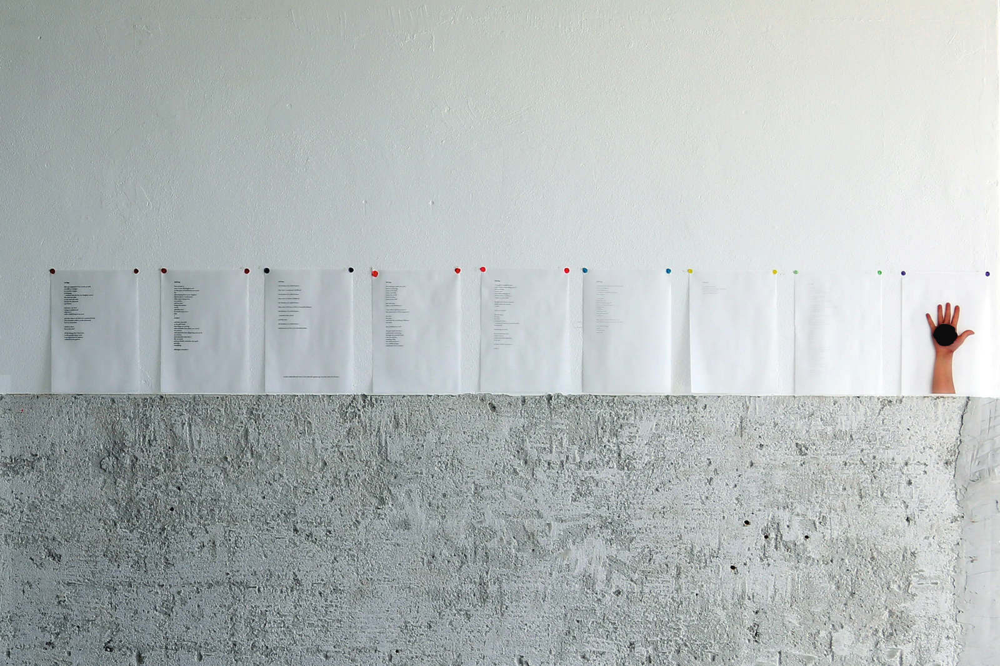
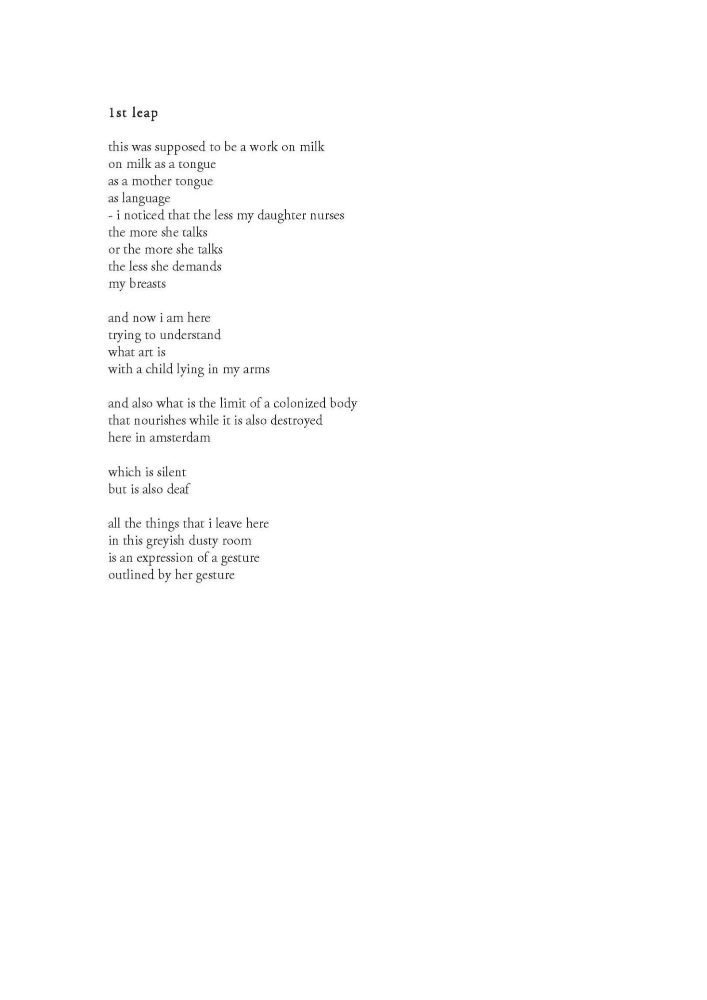
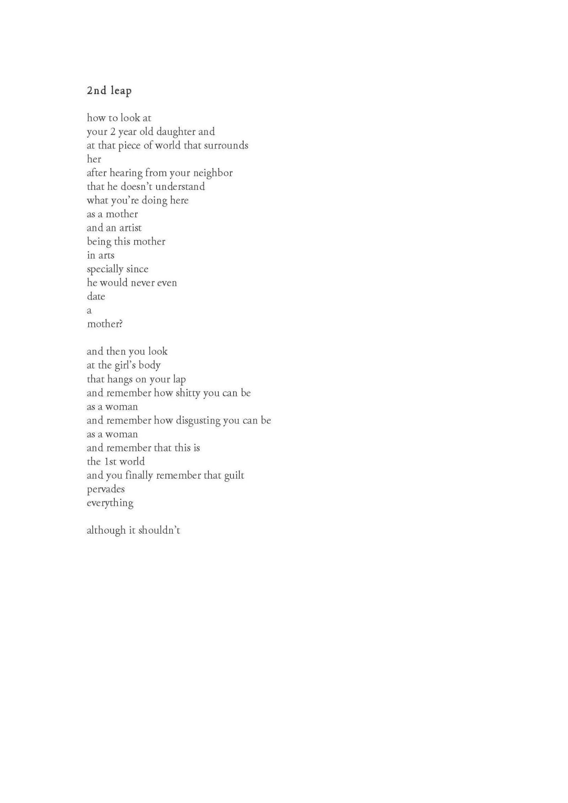
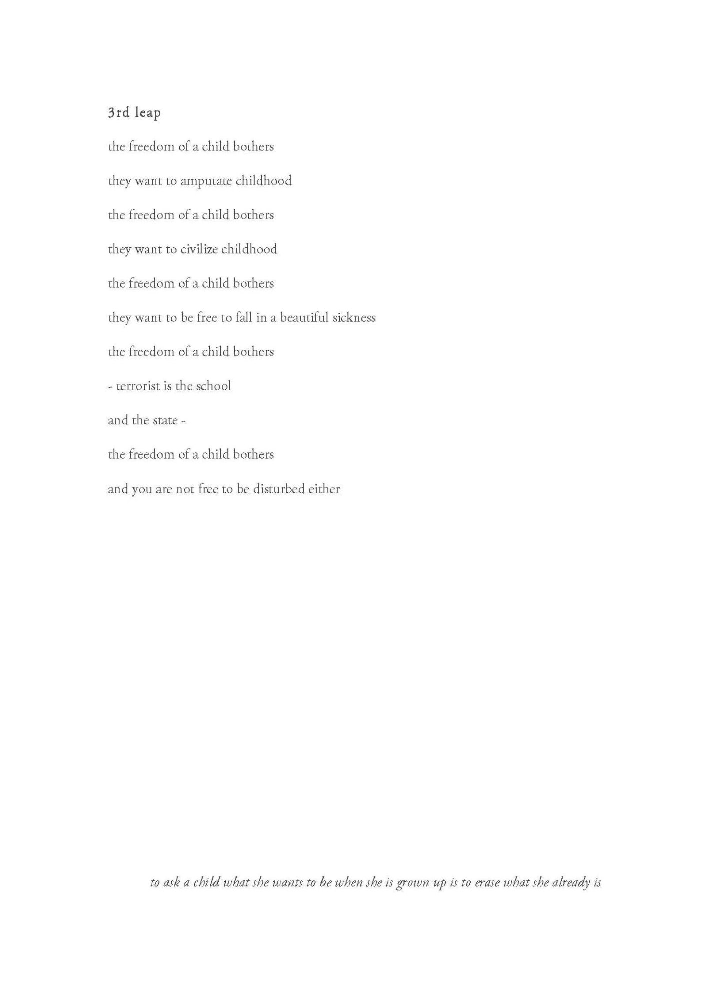
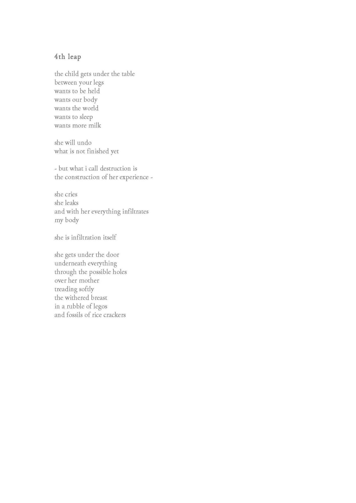
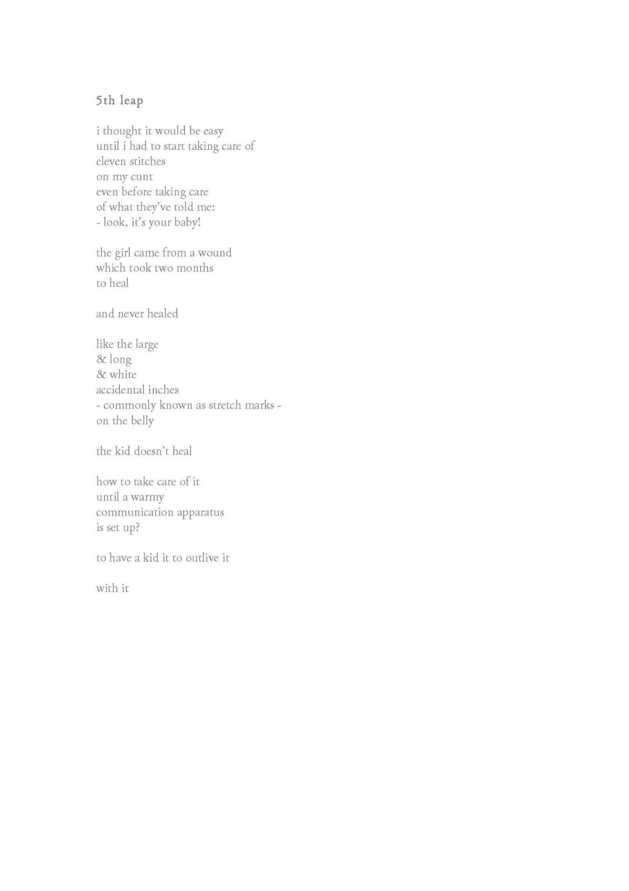
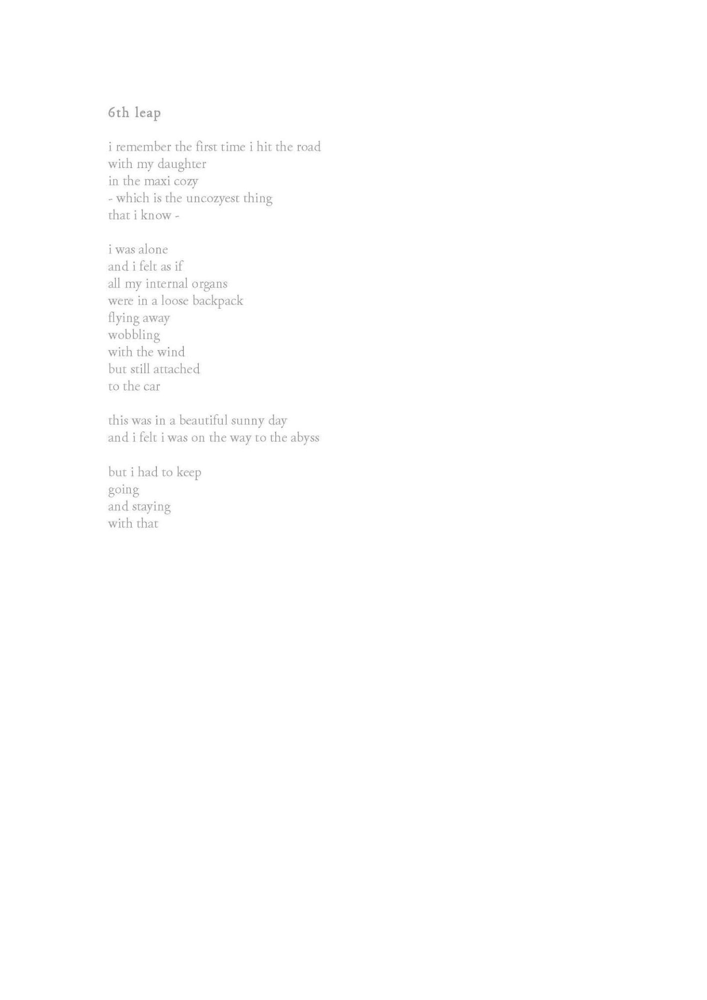
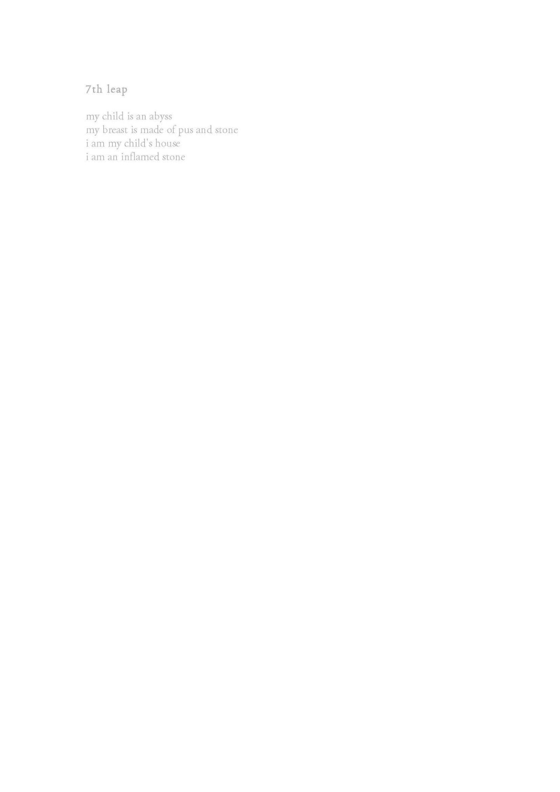
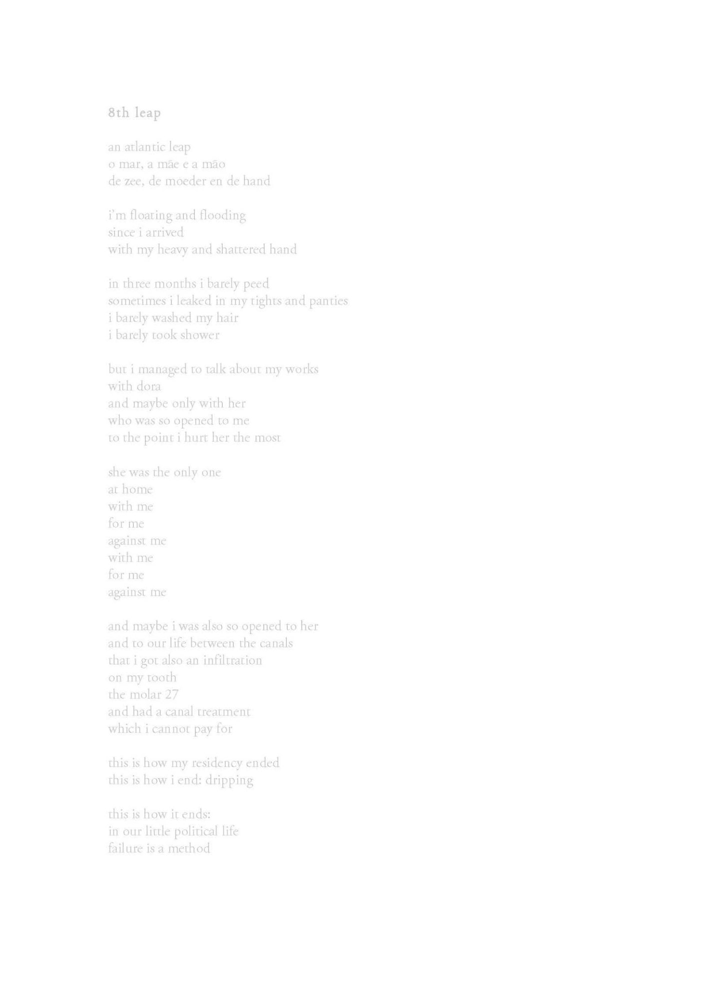
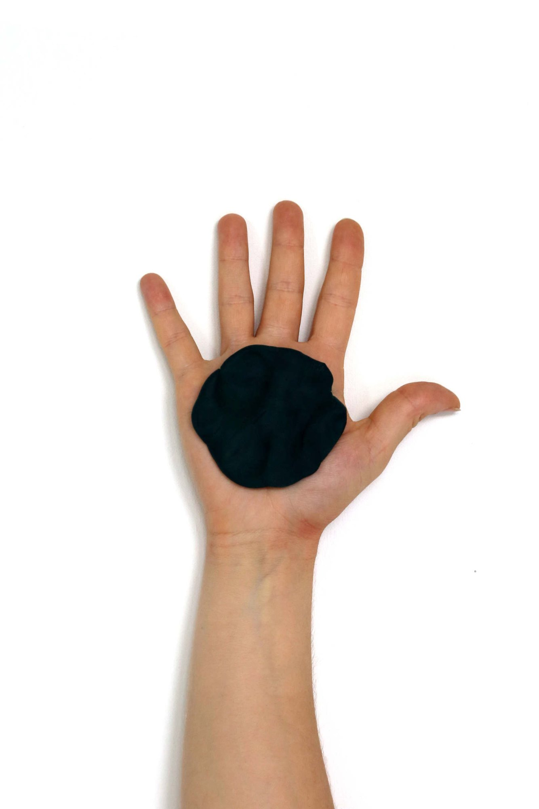

the abyss of the other (o abismo do outro)

the abyss of the other
(o abismo do outro)
2017
instalação (installation)
impressão a laser em papel vegetal, massinha (laser print on vegetal paper, play-doh)
8 textos desaparecendo e fotografia (8 vanishing texts and picture):









2017. re: production. mothers in arts residency. amsterdam.